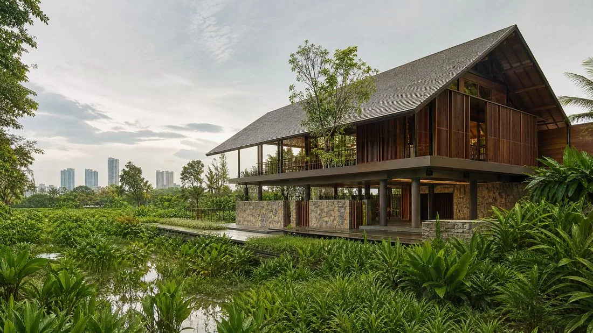
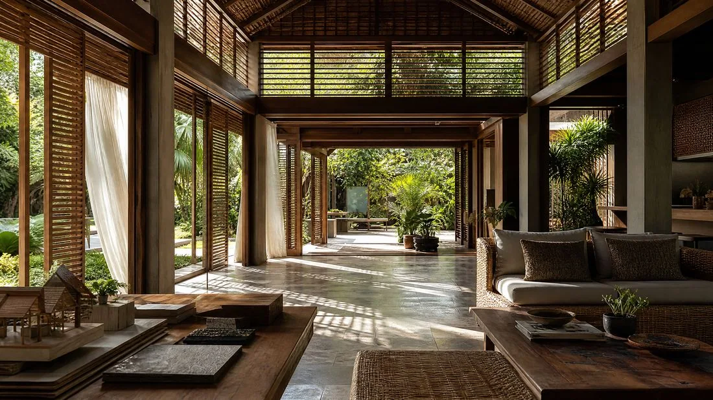
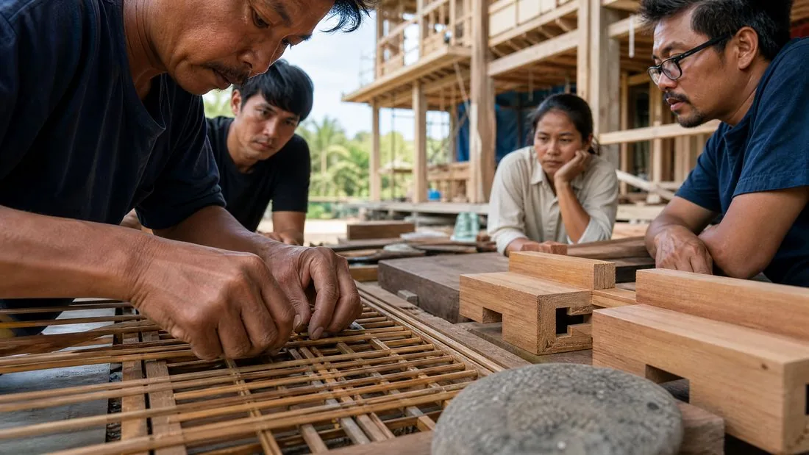

Journal
Le Vernaculaire 2.0 : Réinventer les Savoirs Ancestraux

L'architecture contemporaine marque un retour aux sources inattendu mais radical. Face aux limites des modèles de construction standardisés et à l'urgence climatique, une nouvelle discipline émerge : le vernaculaire 2.0, aussi appelé néo-vernaculaire. Ce mouvement ne se contente pas de copier les formes du passé ; il utilise les outils numériques les plus avancés pour optimiser les savoirs ancestraux et créer des bâtiments hyper-performants, parfaitement adaptés à leur contexte local. En Thaïlande, ce paradigme transforme la manière dont on conçoit l'habitat tropical.
L'amalgamation de la tradition et de l'algorithme
Le vernaculaire 2.0 repose sur une synthèse unique entre l'intuition des anciens bâtisseurs et la précision de la conception computationnelle. Les architectes utilisent désormais des logiciels de simulation thermique et aéraulique pour analyser des techniques traditionnelles, comme l'effet cheminée ou la ventilation transversale, et les adapter aux contraintes urbaines modernes. Cette approche permet de concevoir des bâtiments qui respirent naturellement, réduisant nettement le besoin en climatisation tout en célébrant l'esthétique locale.

Matérialité augmentée : le local au service du global
Utiliser des matériaux locaux n'est plus une contrainte budgétaire, mais un choix de haute performance. Le bois de teck, la pierre de rivière ou le bambou sont désormais transformés par des procédés écologiques pour acquérir des propriétés de résistance et d'isolation comparables aux matériaux synthétiques. Cette «matérialité augmentée» permet de réduire l'empreinte carbone liée au transport tout en soutenant l'économie artisanale locale : la villa moderne devient un écosystème où le savoir-faire des charpentiers rencontre la précision des découpes numériques.

L'identité culturelle comme levier de durabilité
Au-delà de la technique, le vernaculaire 2.0 est un outil de placemaking : création de lieux. Les citadins cherchent à retrouver une connexion avec leur histoire et leur territoire ; l'architecture néo-vernaculaire répond à ce besoin en intégrant des motifs, des textures et des volumes qui font écho à la culture locale, tout en offrant le confort d'un bâtiment intelligent. Cette approche est particulièrement visible dans les projets de régénération urbaine, où d'anciennes structures traditionnelles sont réinterprétées pour accueillir des usages contemporains.
Conclusion
Le vernaculaire 2.0 n'est pas un retour en arrière, mais un bond en avant vers une architecture plus humaine et plus sobre. En alliant la sagesse accumulée par des siècles d'adaptation au climat avec la puissance des outils numériques, les architectes tracent une nouvelle voie : celle d'une modernité enracinée, où le futur de l'architecture ne se trouve pas dans le béton anonyme, mais dans la réinvention intelligente de ses propres racines.